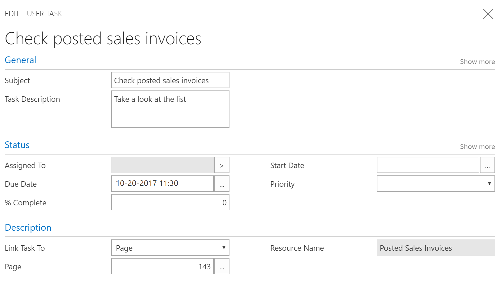

Define User Tasks
In Business Central, you can create tasks to remind you of work to be done. You can create tasks for yourself, but you can also assign tasks to others or be assigned a task by someone else in your organization.
Managing User Tasks
The User Tasks page shows all tasks, and you can easily create and assign new tasks. When you create a task, you can specify the start date and due date, and you can add a link to the page in Business Central where the user must do the work.
For example, you can create a task for yourself to view all posted sales invoices. In that case, you link the task to page 143, Posted Sales Invoices.

Tip
Use the look-up in the Page field and then use the Search for Page or Report field to find the page that you want. For more information, see Searching for a Page or Report.
Picking Up User Tasks
In the Business Manager, Bookkeeper, and Accountant Role Centers, a tile shows pending tasks that are assigned to that user. To pick up a task, simply choose it from the list of pending user tasks. In the ribbon, the link Go to Task Item opens the page where you can do the work.
When you have completed a task, simply mark it as completed.
Deleting User Tasks
If you want to bulk delete all or some user tasks, you can use the Delete User Tasks report. In the request page, you can set filters to determine which tasks must be deleted.
See Also
Searching for a Page or Report
Accountant Experiences in Business Central